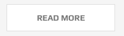

Buttons
A typical button can be added to page using following markup:
<a href="#" class="btn">--caption on button---</a>
Size
By adding size related classes to .btn class-name, various sizes of buttons can be achieved:
.btn-extra-smallstans for a very small button.btn-smallstans for a small button.btn-mediumstans for a medium button.btn-largestans for a large button
Shape
Various shapes for your buttons are availabe.
Rounded corner
Just add .btn-round
Circle
Just add .btn-circle
Wide
Just add .btn-wide

Thick border
Just add .btn-thick-border

Coloring and Skin
Sometime you would want to add ad shiny button to grab your visitor's attention.
Transparent buttons
In some cases you would wish to use a button with transparent background. The it is already there and you can use three classes
.btn-trans which is notmal transparency
there are tow class-names that can be added to this class in order to acheive a better visual for dark and white scenarios:
.btn-tans .btn-skin-darkto use the botton in light and white backgrounds..btn-tans .btn-skin-whiteif you want to use the botton in dark backgrounds.
Skins
You can choose from 6 color variations by adding these classes to the element.
.btn-skin-red.btn-skin-green.btn-skin-cyan.btn-skin-yellow.btn-skin-dark.btn-skin-blue
eg: here is the code sample for the below image:
<a href="#" class="hidden-sm hidden-xs btn btn-medium btn-round btn-skin-purple">read more</a>
<a href="#" class="btn btn-large btn-thick-border btn-circle btn-skin-purple">read more</a>
<a href="#" class="btn btn-medium btn-round btn-skin-purple">read more</a>
Button with Icon
You can add any icon to the right or left of a button using the followign markup:
<a href="#" class="hidden-sm hidden-xs btn btn-medium btn-round">
<i class="oli oli-like"></i>
<span>read more</span>
</a>
Above code will generate the following:
To add the icon to the right side of the button you will need to add .btn-icon-right class to the button:
<a href="#" class="hidden-sm hidden-xs btn btn-medium btn-round btn-icon-right">
<i class="oli oli-like"></i>
<span>read more</span>
</a>
Animated Icons
To get the icon to anomate on hover use the following code sample
<a href="#" class="btn btn-medium btn-round btn-anim-i">
<i class="oli oli-forward"></i>
<span>read more</span>
</a>
As you can see the only difference is the addition of .btn-anim-i class.
You can achieve the simillar effect on the right of icons by simply adding .btn-icon-right:
<a href="#" class="btn btn-medium btn-round btn-icon-right btn-anim-i">
<i class="oli oli-forward"></i>
<span>read more</span>
</a>
Drawer Effect
Just add the .btn-anim-drawer class to the btn
<a href="#" class="btn btn-medium btn-round btn-anim-drawer">read more</a>
Simply add .btn-skin-dark to get above effect at dark containers
<a href="#" class="btn btn-medium btn-round btn-anim-drawer btn-skin-dark">read more</a>
Split Effect
The markup for this special effect of button is as bellow:
<a href="#" data-text="Read More" class="btn btn-medium btn-round btn-an-split">
<span>read more</span>
</a>
Note the additional data-text and class of .btn-an-split
Boootstrap Default Buttons
You can use the built-in bootstrap buttons if you want. Justo go to the bootstrap documentation and learn how.